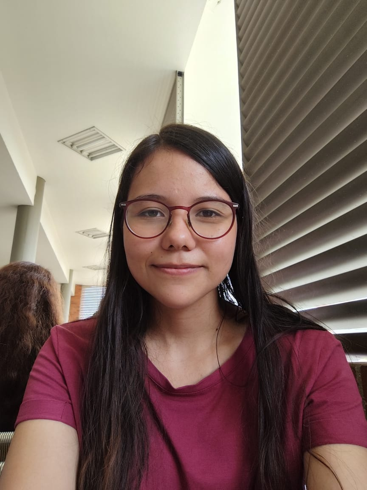

Hola, soy Laura Fernández
Soy estudiante de la carrera de Ingeniería Multimedia en la Universidad Autónoma de Occidente, apasionada por la creación y el diseño digital. A lo largo de mi carrera, he participado en diversos proyectos que abarcan desde el desarrollo de videojuegos y páginas web, hasta el diseño de videos, imágenes, y la edición de audio. Estoy comprometida con el aprendizaje continuo y la aplicaci+on creativa de la tecnología para resolver problemas y crear experiencias virtuales.
Mis Habilidades
Duras
Blender
After Effects
Premiere
C#
Blandas
Trabajo en equipo
Autodisciplina
Orientación al detalle
Comunicación efectiva